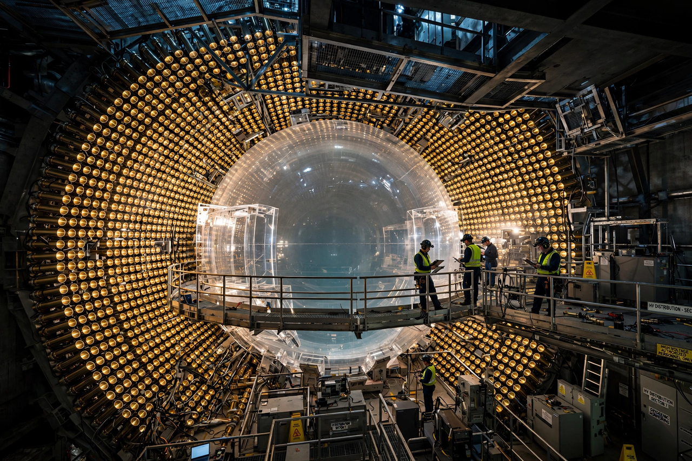

Neutrino
| Flavours | Electron, muon, tau neutrinos |
|---|---|
| Postulated | 1930, Wolfgang Pauli |
| Detected | 1956, Reines and Cowan |
| Key property | Oscillation ⇒ nonzero mass |

[Image: Interior photograph of a large neutrino detector: a spherical vessel lined with photomultiplier tubes]A neutrino is a fermion (an elementary particle with spin 1/2) that interacts only via the weak interaction and gravity. It is electrically neutral and has a rest mass so small that it was long thought to be zero, but — as established by the discovery of neutrino oscillation — nonzero.
Neutrinos are created by radioactive decay, nuclear reactions in stars, supernovae, cosmic-ray collisions and reactors. Trillions pass through every square centimetre of Earth each second, almost all without interacting. Their study — from Pauli's desperate 1930 postulate to the oscillation discoveries of 1998–2001 (Takaaki Kajita and Arthur B. McDonald, Nobel 2015) — has provided the first confirmed physics beyond the Standard Model in its original form.
History
Wolfgang Pauli proposed the neutrino in a famous 1930 letter to explain the continuous energy spectrum of beta decay, calling it a 'desperate remedy'. Enrico Fermi built it into his 1934 theory of beta decay and gave it its Italian diminutive name. Clyde Cowan and Frederick Reines first detected (anti)neutrinos from a reactor in 1956; the muon neutrino followed in 1962 (Nobel 1988) and the tau neutrino in 2000.
Oscillation and mass
The solar neutrino problem — experiments from the 1960s (Raymond Davis's Homestake detector) saw only a fraction of the predicted electron neutrinos from the Sun — was resolved when the Sudbury Neutrino Observatory showed in 2001–02 that the missing neutrinos had oscillated into muon and tau flavours en route. Oscillation requires the flavour states to be mixtures of at least three mass states with different masses; squared-mass differences are measured precisely, but the absolute mass scale and ordering (normal vs inverted) remain open questions targeted by experiments such as KATRIN and DUNE.
Sources and detection
Detectors use kilotonnes of water, ice or scintillator watched by thousands of photomultipliers: Super-Kamiokande (atmospheric oscillation, 1998), IceCube at the South Pole (high-energy cosmic neutrinos), and Borexino (solar neutrinos). Neutrinos carry information directly from the cores of the Sun and supernovae — SN 1987A's neutrino burst arrived hours before its light — and a cosmic neutrino background from the Big Bang, at 1.95 K, is predicted but not yet detected.